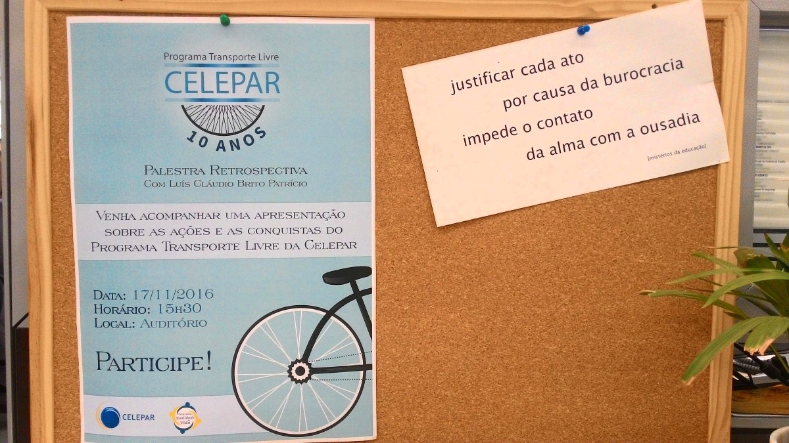
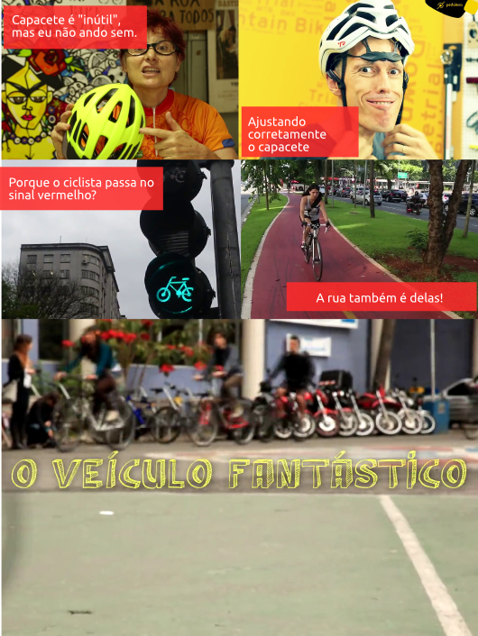

Relatório 2016/2017
 Não é um resumo mas rimou legal :-)
Não é um resumo mas rimou legal :-)
APRESENTAÇÃO/JUSTIFICATIVA
O Programa Transporte Livre é uma iniciativa da Companhia de Tecnologia da Informação e Comunicação do Paraná (CELEPAR).
Seu público-alvo direto gira em torno dos mil colaboradores que trabalham na sua sede e realizam pelos menos 2.500 deslocamentos diariamente.

O objetivo geral do programa é a redução dos deslocamentos feitos de carro para o trabalho, tendo como foco principal, o incentivo ao uso da bicicleta como meio de transporte ao trabalho.
Hoje em dia, a empresa conta com um bicicletário de alto padrão com 66 vagas e chuveiros para atender os 89 colaboradores que vão de bicicleta para o trabalho reduzindo as emissões de gases poluentes em mais de 10 toneladas ao ano e gerando uma economia de dezenas de milhares de reais.
As diversas ações do Programa geram aumento da qualidade de vida e da produtividade dos funcionários; traz benefícios econômicos para a empresa, contribui com o meio ambiente e otimiza a mobilidade urbana.
A experiência do programa já pôde ser compartilhada em diversas ocasiões com outras empresas, em congressos, com gestores públicos e escolas da rede pública e particular, ampliando o alcance do programa em fomentar a cultura da bicicleta e estimular a mobilidade urbana sustentável.
-reconhecimentos
DE BIKE AO TRABALHO
"Além do marketing, incentivar o uso de bicicletas no trajeto dos funcionários até o trabalho pode ser um bom investimento do ponto de vista dos recursos humanos: estudos mostram que os ciclistas trabalham com maior disposição, são mais produtivos, têm melhor saúde e, por isso, faltam menos."
As pesquisas quase sempre são feitas no exterior, mas seus dados valem com parâmetros também no Brasil. Uma delas, feita pelo portal americano TriplePundit, voltado à sustentabilidade, mostra que praticar exercícios antes do trabalho aumenta em 15% a produtividade, os ciclistas vivem em média dois anos a mais e que somente 15% solicitam afastamento do trabalho por doenças. Além disso, de acordo com o TriplePundit, os funcionários-ciclitas costumam ser mais pontuais e suas faltas tendem a ser reduzidas em 80%.
Estudos médicos mencionados nas palestras da Transporte Ativo também apontam que trabalhar de bicicleta reduz risco de problemas cardiovasculares, mortes prematuras, obesidade, diabetes e melhora a condição geral de saúde do indivíduo. O British Journal of Sport Medicine informa que infecções nas vias respiratórias superiores são menos frequentes em indivíduos com grande atividade aeróbica.
Outra pesquisa, feita na Holanda e publicada na revista Preventive Medicine revela que funcionários que não pedalam têm média de faltas de 8,7 dias/ano em virtude de doenças. Os ciclistas, porém, apenas 7,4 dias/ano.
Estudos mostram redução nos atrasos e no estresse que é causado ao trabalhador quando ele perde muito tempo em seus deslocamentos para o trabalho. "O uso da bicicleta ainda pode reduzir custos com planos de saúde, aumentar a satisfação do funcionário com a empresa e reduzir a rotatividade do quadro de pessoal", completa Bernhardt.
10 ANOS!
Iniciado em 2007 envolvendo diferentes setores da empresa, já realizou diversas atividades para incentivar o uso da bicicleta como oficinas, grupos de discussão, palestras, eventos especiais, passeios, mapeamentos, orientações, entre outros.

REALIZAÇÕES
IMPACTO / NÚMEROS
em relação ao ano anterior
77 bicicletas
Média em 2015: 20 bicicletas
Média em 2016: 28.6 bicicletas
Média em 2017: 35 bicicletas
EVENTOS / DEPOIMENTOS
Março 2017: Ultrapasse seus obstáculos
12 DE MAIO DE 2017 - DIA DE BIKE AO TRABALHO
60 bicicletas
Foram rodados aproximadamente 800 km, levando-se em conta trajetos de ida e volta. A ação teve a adesão de quatro ciclistas que participaram pela primeira vez do evento, sendo que um deles percorreu a maior distância (25,3km) de sua casa até o trabalho. Foram evitadas 292,744 kg/CO2 na emissão de poluentes, tendo como parâmetro um carro 1.0 com um empregado na direção.
Sua vinda para o trabalho pode ser muito mais relaxante do que imagina. Ter a possibilidade de apreciar a paisagem e sentir a natureza podem ser sensações que só a bike pode te oferecer.
Por isso, exercite seu corpo e abasteça sua mente.


"O Dia de Bike ao Trabalho representa um momento de conscientização no trânsito, tanto para os ciclistas quanto para os motoristas, uma vez que envolve questões de sustentabilidade da cidade e da melhoria na qualidade de vida."
Contagem diária
dasdas
FUNCEL + BIKE DO BEM + BIKE XTREME
22 DE SETEMBRO DE 2017 - DIA MUNDIAL SEM CARRO
Pipoca e muita informação aproveitando o DMSC e SIPAT 2017!
Novos testes para a Carona CELEPAR

Censo 2017
Através de campanha com dezenas de participações, o registro das bicicletas tem facilitado o trabalho de comunicação e administração do bicicletário. Atualmente estamos na segunda etapa do censo, com registro de foto e número do quadro.
Agora, com informações mínimas sobre a cor ou quadro/modelo já é possível identificar o proprietário.
CONCICLO
A CELEPAR, decreto, atribuições, atuação, conselheiros, workshop 2017
projetos técnicos: GITHUB
Grupo Técnico Transporte Livre: fomentando soluções com base tecnológica
Além de estar relacionado à mobilidade, o Programa Transporte Livre necessita e propicia o uso de tecnologias. Faz todo sentido que estando dentro da CELEPAR, as soluções de TIC estejam presentes na sua organização e no alcance dos objetivos.
comunidade:
lista-celepar-ciclistas@celepar.pr.gov.br : ? inscritos
RedePR
Um grupo ativo e heterogêneo que de forma "transversal" vem conseguindo aplicar na prática o conceito de círculos de qualidade.
Mais do que institucionalizado, o Programa Transporte Livre vai se incorporando na cultura da empresa com um forte senso de comunidade e cooperativismo.
BIKE BUS despedida do Luis Patricio
Recordes 2017: 16/3 - 44 bicicletas matéria site CELEPAR
Revista CIPA + infomatéria
REFERÊNCIAS
AGRADECIMENTOS/APOIADORES/CELEPAR/FUNCEL
PLANEJAMENTO 2018/2019

Relatório 2016/2017
- aumento significativo de ciclistas
- institucionalização do PTL
- reuniões mensais
- uso da rede social interna
- grupo "transversal", dentro da filosofia dos círculos de qualidade
- influências e impacto para adoção do modal
- Comunicação!
- cenário/dados 2016
- DBT 2016
- Reuniões iniciais + mapa mental/quadro
- Painel de ferramentas compartilhadas
- Melhorias bicicletário / percepção do espaço
- 10 anos PTL
- DBT 2017
- Comunicação
- Bike bus / passeios
- SIPAT/DMSC 2017 + carona + Festival de Curtas Transporte Livre
- Contagem diária
- Censo 2017
- Eventos FUNCEL
- CONCICLO
- próximos passos, 2018
- inventário
- proposta técnica para atualização do bicicletário
- * vestiário
- alocados em clientes/regionais?
- + ônibus
- e guarda-chuva compartilhado?